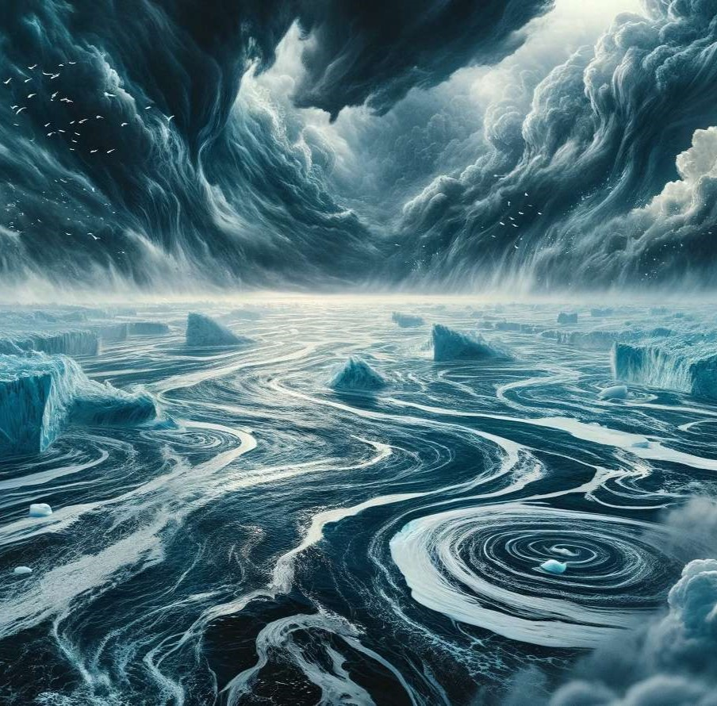

Les courants marins d'air froid peuvent perturber les migrations des
oiseaux, en modifiant leurs routes et leurs habitudes alimentaires.
Cela affecte leur reproduction et leur survie.
Le réchauffement climatique perturbe l'évolution des courants
marins d'air froid, modifiant leur trajectoire et leur intensité. Cette
altération affecte les écosystèmes marins, en perturbant la distribution
des nutriments et des proies pour de nombreuses espèces. Les oiseaux marins,
qui dépendent de ces courants pour leur alimentation et leurs migrations,
subissent des impacts sur leur reproduction et leur survie.